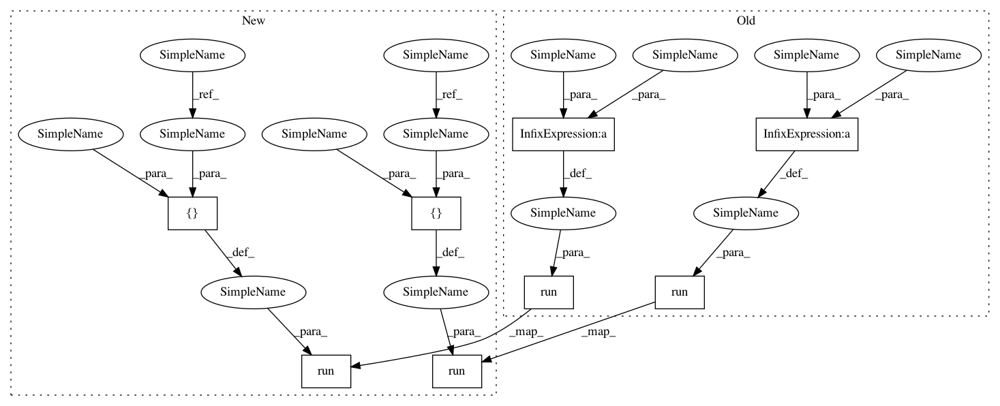

69364c2b79e1e6dd0fe7419377a044c0bdedb4f5,testing/test_conditionals.py,DiagsTest,test_nonwhiten,#DiagsTest#,65
Before Change
Fstar_mean_1, Fstar_var_1 = gpflow.conditionals.gaussian_gp_predict(self.Xs, self.X, self.k, self.mu, self.sqrt, self.num_latent)
Fstar_mean_2, Fstar_var_2 = gpflow.conditionals.gaussian_gp_predict(self.Xs, self.X, self.k, self.mu, self.chol, self.num_latent)
mean_diff = sess.run(Fstar_mean_1 - Fstar_mean_2, feed_dict=self.feed_dict)
var_diff = sess.run(Fstar_var_1 - Fstar_var_2, feed_dict=self.feed_dict)
self.assertTrue(np.allclose(mean_diff, 0))
self.assertTrue(np.allclose(var_diff, 0))
After Change
Fstar_mean_1, Fstar_var_1 = gpflow.conditionals.conditional(self.Xs, self.X, self.k, self.mu, q_sqrt=self.sqrt)
Fstar_mean_2, Fstar_var_2 = gpflow.conditionals.conditional(self.Xs, self.X, self.k, self.mu, q_sqrt=self.chol)
mean1, var1 = sess.run([Fstar_mean_1, Fstar_var_1], feed_dict=self.feed_dict)
mean2, var2 = sess.run([Fstar_mean_2, Fstar_var_2], feed_dict=self.feed_dict)
np.testing.assert_allclose(mean1, mean2)
np.testing.assert_allclose(var1, var2)
In pattern: SUPERPATTERN
Frequency: 3
Non-data size: 8
Instances
Project Name: GPflow/GPflow
Commit Name: 69364c2b79e1e6dd0fe7419377a044c0bdedb4f5
Time: 2017-10-04
Author: mv310@cam.ac.uk
File Name: testing/test_conditionals.py
Class Name: DiagsTest
Method Name: test_nonwhiten
Project Name: GPflow/GPflow
Commit Name: 69364c2b79e1e6dd0fe7419377a044c0bdedb4f5
Time: 2017-10-04
Author: mv310@cam.ac.uk
File Name: testing/test_conditionals.py
Class Name: DiagsTest
Method Name: test_nonwhiten
Project Name: GPflow/GPflow
Commit Name: 69364c2b79e1e6dd0fe7419377a044c0bdedb4f5
Time: 2017-10-04
Author: mv310@cam.ac.uk
File Name: testing/test_conditionals.py
Class Name: WhitenTestGaussian
Method Name: test_whiten
Project Name: GPflow/GPflow
Commit Name: 69364c2b79e1e6dd0fe7419377a044c0bdedb4f5
Time: 2017-10-04
Author: mv310@cam.ac.uk
File Name: testing/test_conditionals.py
Class Name: DiagsTest
Method Name: test_whiten